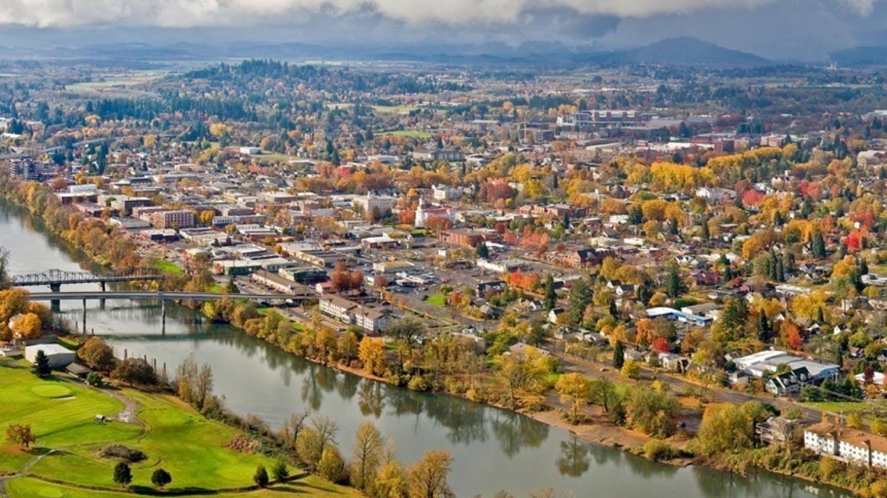

About This Project
The Benton County 2040 Thriving Community Initiative (TCI) is a project in which the goal is to identify the core values and vision of the Benton County community. In order to identify community thoughts, the Thriving Communities Council conducted several surveys by hosting public events throughout the County. At these events, community members were asked to to share comments on what they like about where they lived and what they hoped to see in the future.
This project, conducted by students and faculty at Oregon State University, was done to present the results of this survey. The presentation of the results was done in a geo-visual manner which displays demographic results by city or town. The map also contains a word cloud which shows key words which identifies what the community values.
Our Team
Scott Whitson
Student
Senior in the College of Earth, Ocean, and Atmospheric Studies majoring in Geography and Geospatial Science. I have become primarily interested in Cartography and Land Use Planning. I play the cartographic role in this project, manipulating the style of the maps to best represent the data available.
Advisors
Kyle Hogrefe
PhD student in Geography
PhD student in Geography, and Teaching Assistant for Spring 2017 GEOG 472/572: Geovisual Analytics. Kyle provided students with background on the Benton County TCI project, suggestions for project development, and critique on methods and geovisual products throughout the term."
Methodology
The project completed by this student team is aimed to display the outcomes of a digitally-distributed survey constructed by the Benton County TCI team. The data was collected by Benton County TCI prior to the creation of this piece.
This piece was created through the use of javascript, geospatial software and techniques, and textual/data analysis. Using textual/data analysis techniques, our team was able to convert the raw data into a usable format that geospatial techniques were then applied to. Following this creation of geospatial references for the raw data, the use of javascript was employed to produce a user-friendly environment for exploration.
In order to collect the geographical data, the latitude and longitude coordinates were collected for each city center. The next step in this process was to geo-reference the responses to the location from where the respondent resided, this was done by linking the response with the correct location coordinates. Finally, a marriage of the qualitative and quantitative data has been achieved with the addition of data filters and a word cloud. The filtering allows users to dig into the data through quantitative metrics and spatial dimensions, allowing for easy data-sleuthing from a desktop browser.
Acknowledgements
Jenna Tilt
Classmates of GEOG 572 for their critique and support
Benton County TCI 2040 team
Credits
This project utilized the following libraries: colorbrewer.js, Bootstrap, Leaflet, D3, Crossfilter ,DC, jqCloud, and Cloudflare.
Resources
Collaborators